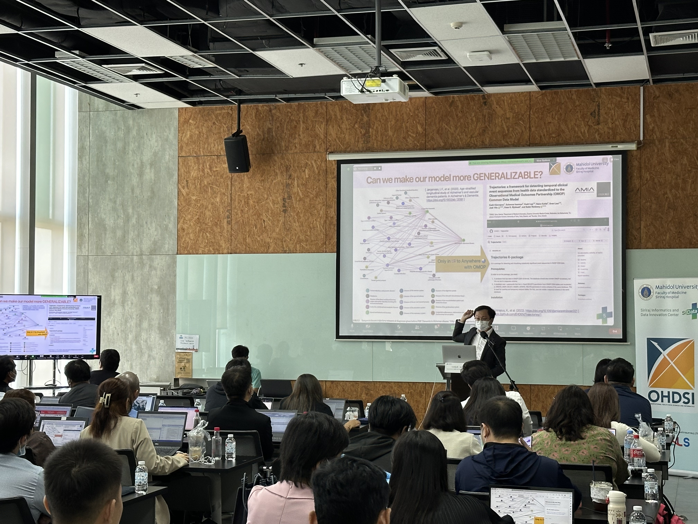
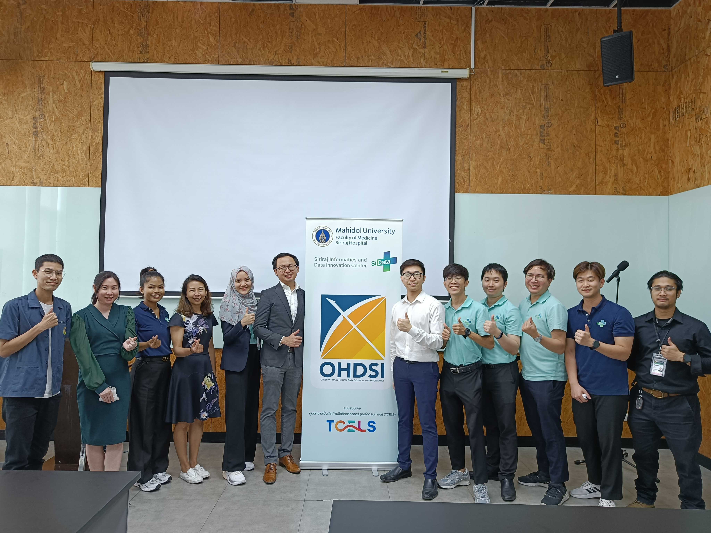

12 กิจกรรมในประเทศไทย
12.1 กิจกรรมในอนาคต
| วันที่ | กิจกรรม | สถานที่ |
|---|---|---|
| TBD ธันวาคม 2566 | Sharing ต้นแบบระบบการแปลงข้อมูล OMOP CDM ที่พัฒนาโดยศิริราช (บทที่ 4) | Zoom |
| TBD กุมภาพันธ์ 2567 | Discussion การแปลงข้อมูล OMOP CDM ในประเทศไทย | Zoom |
| TBD เมษายน 2567 | Sharing ต้นแบบงานวิจัยที่ใช้ข้อมูล OMOP CDM ในประเทศไทย | Zoom |
12.2 กิจกรรมที่ผ่านมา
| วันที่ | กิจกรรม | สถานที่ |
|---|---|---|
| 21 กันยายน 2566 | Hands-on Workshop: Introduction to International Medical Data Standard OMOP CDM for Observational Research (หัวข้อ 12.2.1) | KX Building (KMUTT) |
12.2.1 Hands-on Workshop: Introduction to OMOP CDM
คณะปฏิบัติงานจากศูนย์นวัตกรรมข้อมูลศิริราช (SiData+) และหน่วยวิจัยเพื่อขับเคลื่อนนโยบายสุขภาพ (SiHP) ภายใต้ทุนสนับสนุนจากศูนย์ความเป็นเลิศด้านชีววิทยาศาสตร์ (องค์การมหาชน) (TCELS) ได้จัดการอบรมเชิงปฏิบัติการ หัวข้อ “พื้นฐาน OMOP CDM มาตรฐานข้อมูลทางการแพทย์ระดับสากลสู่งานวิจัย” ในวันพฤหัสบดีที่ 21 กันยายน 2566 เวลา 09.00 – 17.00 น. ณ ห้อง A01AB ชั้น 10 อาคาร KX Knowledge Xchange Building (BTS วงเวียนใหญ่)
บรรยายโดย ณัฐวุฒิ อดุลยานุโกศล, MSc (cand.scient.), BA Hons (Cantab)
Deputy Director of Siriraj Informatics and Data Innovation Center (SiData+)
และวิทยากรับเชิญ Asst. Prof. Mengling ‘Mornin’ Feng, PhD
Assistant Director of Research at Institute for Data Science, National University of Singapore จากประเทศสิงคโปร์
 
12.3 กิจกรรมอื่น ๆ ที่เกี่ยวข้อง
| วันที่ | กิจกรรม | ผู้จัด |
|---|---|---|
| 3 ตุลาคม 2566 | Thailand Health AI Conference 2023 (หัวข้อ 12.3.1) | มหาวิทยาลัยขอนแก่น |